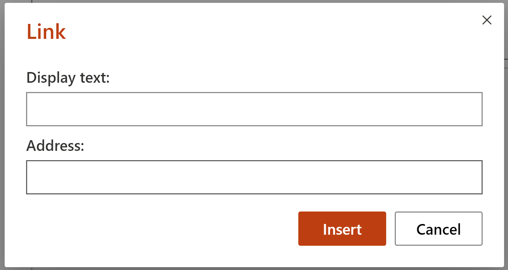

Editing
| many extra details | what we really needed |
|---|---|
 |

|
- fullscreen images are usually pretty heavy in terms of the file size, traffic and loading time.
- small elements will hardly be visible as such screenshots need to be resized to fit in the text
- fullscreen image content is more difficult to control - there's a higher possibility of accidentally leaving some PII in the picture
✅ Try to do not scale the image too much afterward. But if you must, avoid the dreaded pixelation. Try resizing your picture or screenshot in an image editing program. Keep the same ratio of width to height, and then add it back into your document or presentation.
| small, not visible elements | resized window |
|---|---|
 |
 |
| impossible to understand what tab is opened | tabs are visible |
|---|---|
 |
 |
✅ Do not use effects like shadow, borders, etc. They usually look ugly, cheap, and generally don’t fit well with documentation and books. The trouble with shadow effect is they look good only on a particular background.
✅ If possible, use a transparent background, because you don’t know which background will have your reader. Docs are outputted to various formats - HTML, PDF, EPUB - with various backgrounds.
✅ Use a consistent style of screenshots with enhancements (like callouts, text) and drawings - same font, size, colors, design, etc.
✅ Use the same screenshot tool, app version, browser, environment, etc. across your docs and team of tech writers.